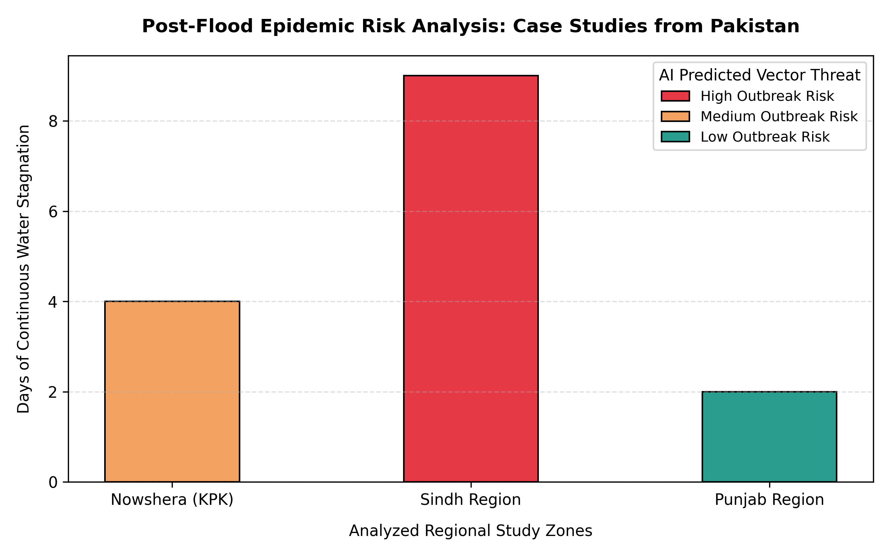

A Computational Approach to Vector-Borne Disease Tracking in Pakistan
Following catastrophic flooding events in Pakistan, stagnant water serves as the primary environmental accelerator for vector-borne diseases such as Malaria and Dengue. Drawing from biological mechanisms, this project analyzes how the duration of continuous water stagnation directly scales local mosquito breeding cycles, creating distinct regional vulnerability profiles.
By compiling environmental telemetry across diverse regional zones, the model categorizes vector threats into tiered risk assessments. While low stagnation zones present controlled baselines, regions with extended water retention showcase exponential spikes in predicted epidemic vectors.

Key Insight: Data demonstrates that the Sindh Region faces critical high outbreak risks due to prolonged stagnation thresholds, requiring immediate public health intervention compared to localized trends in Nowshera (KPK) and Punjab.
This open-access dashboard acts as a functional proof-of-concept for localized healthcare infrastructure. By translating raw environmental variables into dynamic visual risk tiers, municipal health departments can predictively allocate medical supplies, diagnostic kits, and preventative measures before an active outbreak spikes.